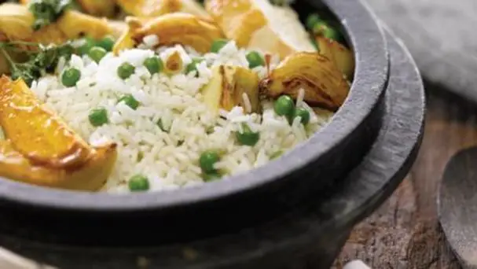

Ofrece alimentos cotidianos y prácticos para toda la familia, como fideos, milanesas de soja, arroz, pan rallado, premezclas para preparar ñoquis, pizza, chipás y torta frita, vegetales congelados y rebozados de pollo.
Es la marca que representa a las mamás argentinas que viven su vida con pasión e imperfecciones, y se preocupan por el crecimiento de sus hijos con un amor incondicional por su familia. Mamás del siglo XXI que lejos de ser perfectas sufren y vibran con las obligaciones diarias y se toman la vida con humor.
A finales del siglo XIX, llega al país desde Italia y crea una pasta de trigo candeal proveniente de campos argentinos. Desde ese tiempo mantiene la excelencia en su elaboración. El espíritu de las tradiciones italianas no solo se refleja en su calidad, sino también en su amplia línea de variedades. Ideales para preparar diferentes platos.

Con más de 100 años de historia, es la marca líder y referente en el mundo del arroz, que te permite cocinar con garantía de resultado. Pionera en el beneficio “no se pasa ni se pega”, nos invita a descubrir la versatilidad del arroz, creando comidas variadas y llenas de sabor, con la confianza que solo puede ofrecer. Cuenta con un amplio portfolio de productos que incluye, además de, Largo Fino, Doble Carolina, Integral, Carnaroli, Yamaní, Risottos y Arroces Preparados.
Es sinónimo de bizcochuelo rico, alto y esponjoso; y también un símbolo de calidad y trayectoria por más de 50 años. Propuestas dulces ideales para compartir momentos mágicos y alegres. Se destacan los brownies, las gelatinas, los postres, los helados, las mousses y la línea light.